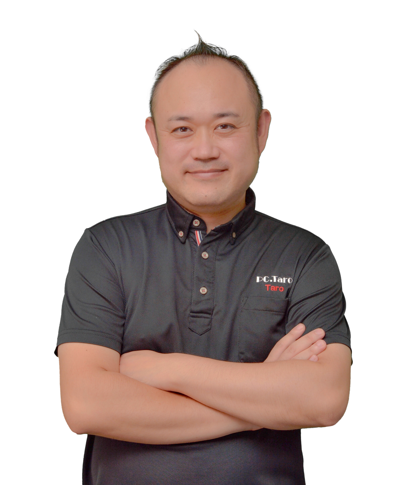

第1期 2026年10月15日(木)・16日(金) 宇都宮開催 / 最大12人限定 / 1社4名まで / 助成金活用型
パソコン太郎メゾットAI講習会 初級編
5大メゾットで、2日で会社全員がURLで使えるAI業務アプリを2本持ち帰る。
AIを勉強して終わる研修ではありません。1本目は全員共通のAI業務アプリ、2本目は御社のファイルから作る自社用アプリ。ログイン、データ保存、AI接続、社内共有URLまで、会社で使うことを前提に作ります。
中小企業なら、研修費40万円に対して最大30万円助成の対象候補に。
人材開発支援助成金「事業展開等リスキリング支援コース」を想定した設計です。助成金は後払いで、支給保証ではありません。
第1期は、2026年10月15日(木)・16日(金)に宇都宮で開催。最大12人、1社4名までで、2本の社内アプリを作り切ります。
大人数のセミナーではなく、講師と補助スタッフが画面を見ながら進める実装研修です。作った人だけで終わらせず、会社全員がURLで使える状態を目指します。
開催日・開催地
2026年10月15日(木)・16日(金)、宇都宮開催。具体会場は受講確定後に案内します。
定員
第1期は最大12人限定。1社4名まで参加できます。質問と画面確認ができる人数に絞ります。
受講料
1人40万円。1社4名まで。助成金活用を希望する会社は事前確認が必要です。
時間
2日間、休憩を除く標準13時間前後のOFF-JT研修として設計します。
対象
社長、幹部、総務、現場責任者、社内DX担当など、業務を知っている人。1社4名まで。
持ち帰るもの
共通アプリ、自社アプリ、社内共有URL、作成データ、改善履歴、次に作る手順。
2日後に残るのは、資料ではなく「社員がURLで使えるWebアプリ」です。
聞いて終わる講習ではありません。全員で同じ型を体験し、御社ファイルを1つ選び、質問表と音声で判断基準を足し、会社で試せる形にして持ち帰ります。
普通のAI講習会との違いは、「会社で使うところ」まで作ることです。
多くのAI講座は、便利な使い方やプロンプトで終わります。パソコン太郎メゾットAI講習会は、御社のファイルを1つ選び、質問表と音声で判断基準を集め、社内でURL共有できるWebアプリにします。
一般的なAI講習で起きやすいこと
- AIツールの紹介で終わる
- プロンプトは覚えたが、業務に戻す人がいない
- 試作品はできても、社員が使えるURLになっていない
- データ保存、ログイン、社内共有の設計が抜ける
パソコン太郎メゾットで持ち帰るもの
- 会社全員がURLで使えるAI業務Webアプリ
- 自社ファイルから作った御社専用アプリ
- ログイン、保存、AI接続、改善履歴の考え方
- 3つ目を自分たちで作るための手順書
この講習会が向いている会社、向いていない会社。
誰にでも売る講習会にはしません。2日で成果物を持ち帰るため、参加前の向き不向きをはっきりさせます。
向いている会社
- 業務に使っているExcel、PDF、マニュアルがある
- 社長や現場の判断基準を、AIに使わせたい
- 社員がURLで使える小さな社内アプリを作りたい
- 研修後も3つ目、4つ目を自分たちで作っていきたい
向いていない会社
- AIの話を聞くだけで満足したい
- 自社ファイルや業務内容を一切出せない
- 2日で大規模な基幹システムを完成させたい
- 社内で使う人や運用責任者を決めるつもりがない
3つの1000から生まれた、中小企業向けの実装型メゾットです。
ChatGPTが世の中に出てから1000日を超えた今、AIは「話題の技術」ではなく「会社で使う道具」になりました。その間にパソコン太郎は、中小企業の現場に入り、社長の相談を聞き、業務資料と音声を集め、AI社員、業務アプリ、補助金、社内運用まで試し続けてきました。その蓄積を、再現しやすい手順に落としたのが初級編です。
現場の相談を聞いた
社長、幹部、現場担当者の悩みを聞き、AIで何を変えるべきかを見立ててきました。
業務資料を読ませた
Excel、PDF、マニュアル、見積、日報など、会社に眠るファイルをAI活用の材料にしてきました。
AI社員とアプリを作った
問い合わせ、日報、会議メモ、見積、社内ナレッジなど、使える形にする実験を重ねてきました。
運用まで見てきた
作って終わりではなく、誰が使うか、どう共有するか、どう改善するかまで現場で見てきました。
第1期で本人から学べる価値は、AIを「話す人」ではなく、AIを現場で使う形まで見てきた人から学べることです。
パソコン太郎本人は、著名なビジネスインフルエンサーとのAI・出版プロジェクト、国会議員へのAI・ITレクチャー、教育委員会関連の講演、金融機関・商工会議所・企業向けAI講習など、相手に合わせてAIを実務に落とす仕事を積み重ねてきました。だからこの講習会は、ツール紹介ではなく「会社で使うWebアプリを作って運用する」ことに寄せています。
著名ビジネスインフルエンサーとのAI・出版実績
ホリエモン出版、AIホリエモン、オフラインAIアプリなど、知識や発信をAI、出版、アプリに変えるプロジェクトに関わってきました。
フィジカルAIラボなど先端テーマ
画面の中だけのAIではなく、製造業、現場、身体性、リアル空間でAIをどう使うかというテーマにも取り組んでいます。
議員・教育委員会関連へのAI/ITレクチャー
国会議員へのAI・ITレクチャー、宇都宮市教育委員会関連の生成AI講演など、公共領域でもAIを分かりやすく、実務に落とす講師として登壇してきました。
金融機関・銀行向けAI講習
信用金庫、銀行、金融機関の顧客向けセミナーなど、堅い業界でも使える形でAI活用を説明してきました。
商工会議所・経営者団体での講演
中小企業の社長、後継者、幹部に向けて、AIを「明日から何に使うか」まで落とし込む講演を重ねています。
プレスリリース・ニュース掲載
出版、AI講演、業務提携、地域での取り組みは、新聞、Webニュース、プレスリリースでも発信されてきました。
パソコン太郎式 5大メゾット
詳細な手順やプロンプトは受講確定後に案内します。公開LPでは、どんな考え方で進める講習なのかだけをお伝えします。
1. 会社の現場から始める
一般論ではなく、御社の業務とファイルを題材にして進めます。
2. 作って終わりにしない
社内で共有し、実際に使うところから逆算します。
3. 迷子にならない構造で進める
画面、保存、AI、ログインなどを順番に確認しながら作ります。
4. 現場の判断基準を入れる
資料だけでは足りない経験や例外を、講習内で拾って反映します。
5. 次に作れる状態で持ち帰る
2本を作って終わりではなく、次の1本へ進める状態を目指します。
詳細は受講者向けに案内
当日の進め方、確認ポイント、作業手順は受講確定後の講習ページで案内します。
1本目は全員共通。2本目は御社専用。どちらもAIを使う意味があるアプリにします。
単なる入力フォームではありません。入力された内容や業務ファイルをもとに、AIが要約、確認、判断補助、返信文、次の行動を出す形にします。
1本目: AI日報タイムカード
どの会社にも必要な勤怠、日報、明日の予定を題材にします。AIが日報を要約し、抜け漏れ、注意点、次の行動を出します。共通題材なので、作成、保存、公開、社内共有の型を全員で揃えられます。
2本目: 自社ファイルから作る専用アプリ
御社のExcel、PDF、マニュアル、問い合わせ履歴などを1つ持ち込み、質問表と音声回答で不足情報を足します。2日で作れる範囲に絞り、社内で試せる形に仕上げます。
1日目に、Webアプリの全体像を図解で理解してから作ります。
専門用語を覚える講義ではありません。どこを作っているのか迷わないように、社内アプリを5つの部品に分けて進めます。
2日目は、御社ファイルと音声を使って「自社アプリに育てる流れ」を図解してから作ります。
2本目は、ただファイルを読み込ませて終わりではありません。ファイルに書かれている情報と、社長や現場の頭の中にある判断基準を合わせて、会社で使える画面とAI回答へ戻していきます。

パソコン太郎とは、AIを中小企業の現場、著名人プロジェクト、官公庁、金融機関に通してきた実装型の会社です。
パソコンやITの困りごとを現場で見てきた会社だから、机上のDXではなく、社長と社員が本当に使うところから逆算します。ホリエモン出版、AIホリエモン、フィジカルAIラボ、教育委員会関連の講演、金融機関向けAI講習などで培った実装感を、中小企業が2日で体験できる形にしたのがこの初級編です。
なぜ今やるのか
メゾットが固まり、想像していたことが技術として実現できる段階まで来たためです。今後も変化はありますが、土台は大きく揺れにくくなりました。
誰に向いているか
社長、幹部、総務、現場責任者、社内DX担当など、業務を知っていて、会社で使う小さなアプリを作りたい人に向いています。
何が違うか
AIツールの使い方ではなく、業務ファイルと音声から、自社の判断基準をソフトに戻すところまで行う点です。
第1期で本人から学べる価値は、肩書きではなく、現場で教え、聞き、作り続けてきた経験にあります。
2011年の創業以来、パソコン修理、IT顧問、AIコンサル、講習会、出版、イベント、業務システムづくりまで、現場で必要なものを一つずつ形にしてきました。第1期は、その本人が2日間のメイン講師として、御社のファイルをどうアプリにするかまで一緒に見立てます。
幼稚園生から高齢者まで教えてきた
1000時間以上の講習会・授業を通じて、難しいITやAIを相手の理解度に合わせて伝えてきました。だから当日も、専門用語だけで置いていく進め方にはしません。
NPO ITアット宇都宮の立ち上げ
NPO ITアット宇都宮の初代理事長として、地域にITを広げる活動を立ち上げてきました。教えること、支えること、現場で使える形にすることが土台にあります。
AIコンサル音声1000時間以上から型化
今回のメゾットの土台になっているのは、AIコンサルの相談、提案、打ち合わせの音声です。聞き方、見立て、打ち手、クロージングを、再現しやすい型として整理しています。
発想を事業やアプリに戻してきた
著名なビジネスインフルエンサーとの仕事、出版、AIプロジェクト、業務アプリづくりなど、アイデアを話で終わらせず、実際に使える形へ落とし込んできました。
ITコンサルの経験が土台
AIだけでなく、パソコン、社内IT、業務改善、顧問対応まで見てきたから、会社の現実に合わせて「どこから作るか」を考えます。
現場を見立てる
社長の言葉、社員の困りごと、業務ファイルから、どこをアプリ化すると効果が出やすいかを整理します。入口、出口、置き場、判断者を短い質問で確認します。
判断基準を聞き出す
社長や現場が普段なんとなく判断していることを、質問と対話で引き出し、音声として残し、ソフトに反映できる材料に変えます。
公的領域・金融・経営者向けにも説明
国会議員へのAI・ITレクチャー、教育委員会、自治体、信用金庫、銀行、商工会議所、企業向け講習など、相手に合わせてAIを分かる言葉に翻訳してきました。
第2期以降は、パソコン太郎メゾットを理解した講師が担当する場合があります。第1期は本人が2日間のメイン講師を務める特別体制です。2日目夜の懇親会にも本人が参加します。懇親会は希望者参加、別途5,000円です。
1日目は知識と共通アプリ。2日目は御社ファイルから専用アプリ。
講師のレベルに依存しないよう、当日はURLで配布する講習ページを見ながら、プロンプトをコピーし、1つずつ進みます。
AIで作る全体像を理解し、共通アプリを公開する
- 1ゴール確認2日で2本作る目的、完成基準、持ち帰る成果物を共有します。
- 2基本構造の図解画面、ログイン、保存、処理、AI接続を順番に理解します。
- 3受講環境を準備Googleアカウント、Chrome、受講確定後に案内する当日環境を確認します。
- 4AI日報タイムカードを作る全員同じ題材で、入力、保存、AI要約、社内共有URLまで進めます。
- 5宿題を決める2日目に使う自社ファイルを1つ選び、目的名フォルダにまとめます。
自社ファイルをもとに、改善版まで仕上げる
- 1作る範囲を絞る誰が、何を入力し、何を出力するかを決めます。
- 2AIに質問表を作らせるファイルに足りない判断基準、例外、言い回しを聞く質問表を作ります。
- 32人1組で録音する質問する人と答える人に分かれ、音声で判断基準を残します。
- 4自社アプリを作る質問表と音声回答をもとに、画面、保存項目、AI指示文へ反映します。
- 5触って直す社内共有URLで確認し、改善履歴と3つ目を作る手順まで残します。
第1期 2026年10月15日(木)・16日(金)のタイムスケジュール（予定）
下記は現時点の予定です。休憩を除く実訓練時間は、2日間合計で標準13時間前後を想定しています。第1期はパソコン太郎本人がメイン講師を務め、1日目夜は宿題の時間を確保し、2日目の研修後に本人も参加する懇親会を開催します。
予定の詳細タイムスケジュールを見る
| 日程 | 時間 | 内容 | ゴール |
|---|---|---|---|
| 1日目 | 09:30-10:00 | 受付、PC確認、会場案内 | 参加環境を整える |
| 1日目 | 10:00-10:30 | オープニング、2日間のゴール、完成基準の共有 | 何を作り、どこまで仕上げる研修かを揃える |
| 1日目 | 10:30-11:10 | パソコン太郎本人講義: AIを会社に残るソフトへ変える考え方 | AI活用を「作って使う」視点に切り替える |
| 1日目 | 11:10-12:00 | 社内アプリの全体像、ログイン、保存、共有、AI接続の考え方 | 何を作っているか迷わない土台を作る |
| 1日目 | 12:00-13:00 | 昼休憩 | 休憩 |
| 1日目 | 13:00-14:30 | 受講環境確認、全員共通アプリ制作 前半 | 入力、保存、AI回答の流れを作る |
| 1日目 | 14:30-14:45 | 休憩 | 休憩 |
| 1日目 | 14:45-16:15 | 全員共通アプリ制作 後半 | 会社で触れる形まで仕上げる |
| 1日目 | 16:15-17:00 | 社内共有URL確認、動作確認、修正 | 1本目を持ち帰れる状態にする |
| 1日目 | 17:00-17:45 | 2日目に使う自社ファイルの選定、宿題、質疑応答 | 2本目の題材を決める |
| 2日目 | 10:00-10:20 | 1日目の振り返り、自社ファイル確認 | 2本目の制作準備を整える |
| 2日目 | 10:20-11:00 | パソコン太郎本人講義: 自社アプリの作り方と範囲の決め方 | 2日で作れる範囲へ絞る |
| 2日目 | 11:00-12:00 | 自社アプリの目的整理、質問表作成 | ファイルに足りない判断基準を聞ける状態にする |
| 2日目 | 12:00-13:00 | 昼休憩 | 休憩 |
| 2日目 | 13:00-14:00 | 2人1組ヒアリング、音声回答 | 現場の例外、判断基準、言い回しを集める |
| 2日目 | 14:00-14:45 | 音声内容の整理、自社アプリへの反映準備 | 画面、保存項目、AIへの指示に使える材料へ変える |
| 2日目 | 14:45-15:00 | 休憩 | 休憩 |
| 2日目 | 15:00-16:30 | 自社アプリ制作 | 御社ファイルをもとに2本目を形にする |
| 2日目 | 16:30-17:15 | 社内共有URL確認、動作確認、改善 | 2本目を会社で試せる状態にする |
| 2日目 | 17:15-17:45 | パソコン太郎本人まとめ、3本目の作成計画、質疑応答 | 帰社後に次の1本へ進む準備をする |
| 2日目 | 18:30-20:30 | 懇親会 希望者参加・別途5,000円 | パソコン太郎本人も参加。質問、交流、次の展開を相談できます |
たとえば、こんな社内Webアプリが作れるかもしれません。
当日作る内容は、御社のファイルと2日で作れる範囲に合わせて決めます。大きな基幹システムではなく、すぐ試せる小さな業務アプリに絞ります。
AI日報タイムカード
勤怠、日報、予定を入力し、AIが要約と注意点を出す。
見積もり下書き
料金表や過去見積から、概算、注意事項、返信文を作る。
社内マニュアル質問
就業規則や手順書をもとに、社員の質問へ答える。
問い合わせ返信
過去メールやFAQから、返信文と確認項目を出す。
現場チェック記録
点検表や作業手順をWeb化し、抜け漏れを整理する。
会議メモ整理
音声メモから、決定事項、担当、期限をまとめる。
商品/在庫検索
商品一覧や在庫表から、条件に合う候補を探す。
採用/面談整理
面談メモから、懸念点と次に聞く質問を整理する。
商品は1つ。第1期は2026年10月15日(木)・16日(金)、宇都宮で最大12人限定、1社4名までです。
安い座学ではなく、成果物と運用の入口を会社に残す2日間の実装研修として設計します。
パソコン太郎メゾットAI講習会 初級編
休憩を除く標準13時間前後のOFF-JT研修。参加は1社4名まで。助成金活用を希望する会社は、事前に顧問社労士または管轄労働局へ確認してください。2日目夜の懇親会は希望者参加、別途5,000円です。
共通アプリ
AI日報タイムカードを全員で作り、作成から公開までの型を覚えます。
自社アプリ
御社のファイルをもとに、社内で試せるWebアプリを作ります。
社内共有URL
会社の人がURLで使える状態を目指し、運用前提で確認します。
手順書一式
作成データ、改善履歴、3つ目を作るための手順を持ち帰ります。
仮申し込み後に、作るアプリと助成金の確認ポイントを整理します。
フォーム送信だけで本申込確定ではありません。第1期の枠を押さえる入口として、まず「2日で成果物になりやすいファイルか」「受講準備ができるか」「助成金を検討する場合に何を確認すべきか」を整理します。
1. 仮申し込み
参加人数（1社4名まで）、会社の業種、作りたい業務アプリの候補をフォームで送ります。
2. ファイル候補確認
Excel、PDF、マニュアルなど、2日で扱いやすいファイルを1つに絞ります。
3. 助成金の事前確認
希望する会社は、顧問社労士または管轄労働局へ計画届や対象可否を確認します。
4. 受講確定
日程、人数、支払い、持ち込みファイル、参加条件を確認して受講を確定します。
5. 準備案内
当日使う環境、必要な契約、Chrome設定、講習ページURLを個別に案内します。
6. 当日参加
講習ページの手順に沿って、プロンプトをコピーしながら2本のアプリを作ります。
対象候補となる助成金と、受講時の見え方
中小企業のDX/AI人材育成として、人材開発支援助成金「事業展開等リスキリング支援コース」を想定しています。給与補償にあたる賃金助成も検討対象です。
助成金の計算詳細と注意事項を見る
| 会社区分 | 研修費への助成目安 | 給与への助成目安 | 受講時の考え方 |
|---|---|---|---|
| 中小企業 | 最大30万円 40万円×75%の目安 |
13,000円 13時間×1,000円の目安 |
受講料部分は40万円から30万円助成の対象候補。賃金助成は研修時間中に支払う給与負担を補う枠です。 |
| 中小企業以外 | 最大20万円 10時間以上100時間未満の上限目安 |
6,500円 13時間×500円の目安 |
会社規模、訓練内容、申請条件により助成率と上限が変わります。事前確認が必要です。 |
参加条件
受講前に必要なものです。当日使う環境名や設定手順は、受講確定後に個別案内します。
よくある質問
参加前に不安になりやすいところを、先に整理しています。
Q. パソコンが得意ではなくても参加できますか？
A. 参加できます。ただし、Googleアカウントでログインする、Chromeを使う、ファイルをアップロードする、コピー&ペーストする程度の基本操作は必要です。
Q. 具体的にどのツールを使うのですか？
A. 当日使う環境名、契約するサービス名、設定手順は受講確定後に案内します。先に誤った契約や設定をしてしまうのを避けるためです。
Q. 2日で本当に会社で使えるWebアプリになりますか？
A. 大きな基幹システムを作る研修ではありません。業務ファイルを1つに絞り、入力、保存、AI回答、社内共有URLまでの小さなWebアプリとして作ります。
Q. 研修後、自分たちだけで3つ目を作れますか？
A. 初級編のゴールは、2本を持ち帰り、3つ目の小さなWebアプリを自分たちで作れる状態にすることです。並走して教えてほしい場合は、中級編としてAI実装伴走を案内します。
Q. 助成金は必ず受けられますか？
A. 支給保証はできません。対象候補として設計しますが、申請可否、支給額、提出書類は顧問社労士または管轄労働局へ確認してください。
Q. 研修費以外に必要な費用はありますか？
A. 別途、当日案内する有料サービスの下位プランとして月額100ドル目安の契約が必要です。交通費、宿泊費、PC、通信費などは研修費に含まれません。
Q. 懇親会はありますか？
A. 1日目夜は宿題の時間を確保するため、懇親会は2日目の研修後に行います。希望者参加で、パソコン太郎本人も参加します。第1期は2日間とも本人がメイン講師を務めます。参加費は別途5,000円です。
Q. 持ち込むファイルに個人情報が入っていても大丈夫ですか？
A. 個人情報や機密情報は、可能な限り匿名化、サンプル化して持ち込んでください。研修では、2日で作れる範囲に絞って扱います。
第1期は2026年10月15日(木)・16日(金)、宇都宮開催。最大12人限定、1社4名までの参加枠を押さえてください。
仮申し込み後、こちらから参加条件、持ち込みファイル、助成金確認の状況についてご連絡します。
仮申し込みは本申込確定ではありません。日程、人数、持ち込みファイル、参加条件、助成金確認の状況を確認したうえで、本申込へ進みます。